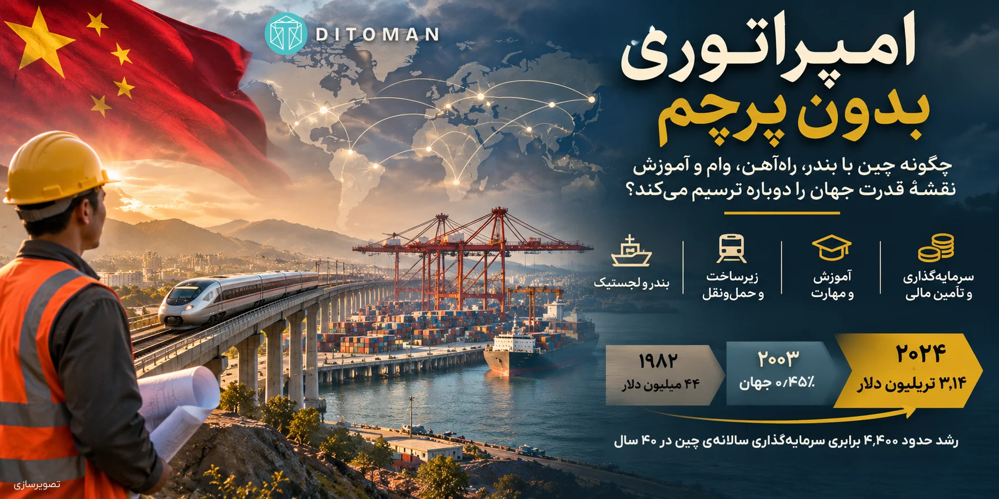
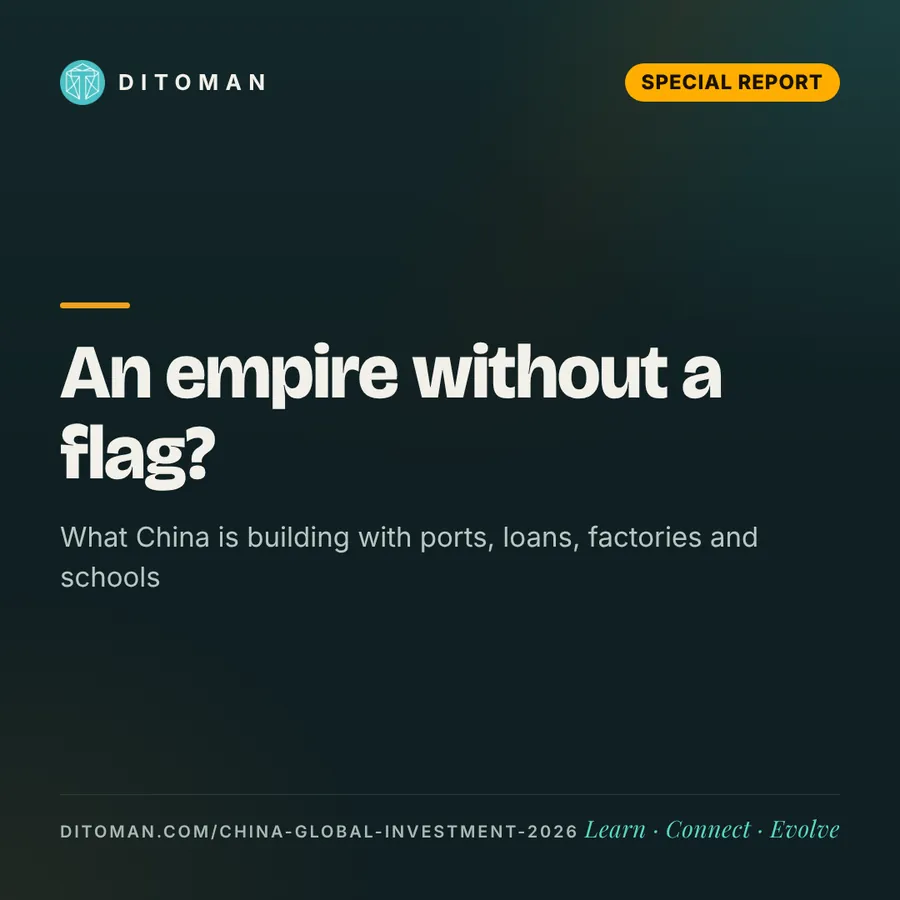
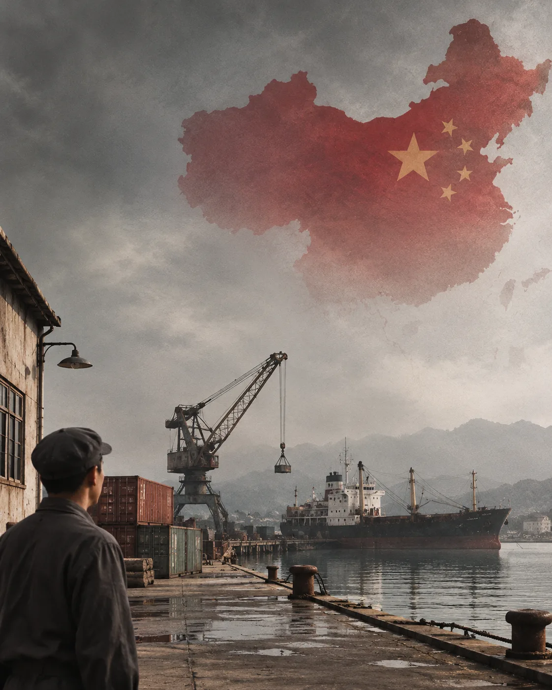
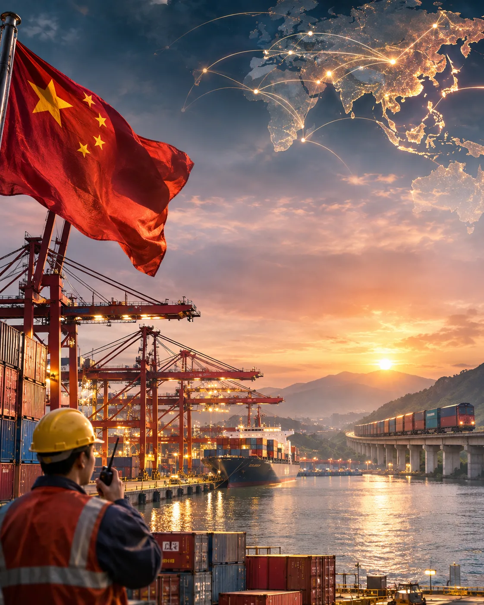
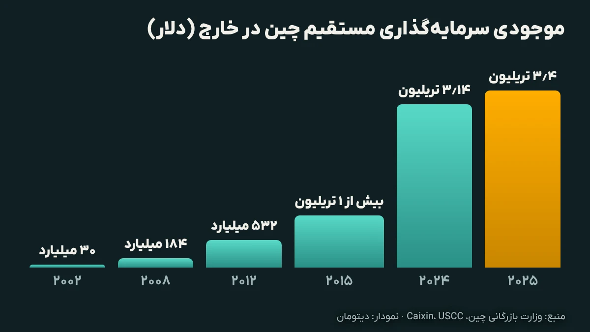
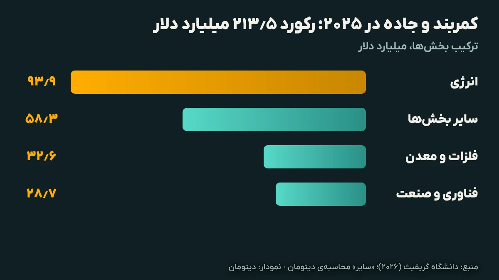

امپراتوری بدون پرچم؟ چین با بندر، وام، کارخانه و دانشگاه چه میسازد
An empire without a flag? What China is building with ports, loans, factories and schools
چهل سال پیش چین خودش سرمایه میخواست. امروز در ۱۸۹ کشور حضور دارد. این مدل با بریتانیا، فرانسه و آمریکا چه فرقی دارد و برای آینده و بازارها چه معنایی دارد؟
Forty years ago China needed capital itself. Today it is present in 189 countries. How does this model differ from Britain, France and the US, and what does it mean for the future and for markets?
1. یک راهآهن، دو روایت
تصور کن کشوری در آفریقا برای ساخت راهآهن پول ندارد. کشوری دیگر پیشنهاد میدهد پول را تأمین کند، شرکتهایش خط را بسازند، تجهیزات را بیاورند و سالها در نگهداریاش بمانند.
چند سال بعد، قطار حرکت میکند. کالا سریعتر میرسد، تجارت رونق میگیرد و مردم از چیزی استفاده میکنند که پیشتر نبود.
اما اتفاق دیگری هم افتاده است. دولت میزبان حالا به یک بانک خارجی بدهکار است. قطعه و تجهیزات از همان کشور میآید. مهندسان برای نگهداری به آموزش همانجا نیاز دارند و بخشی از تجارت کشور به مسیری گره خورده که یک شریک خارجی در ساخت و بهرهبرداریاش نقش دارد.
این داستان، بهتنهایی نه نشانهی استعمار است و نه اثبات توسعهی پایدار. اما یک پرسش بزرگ میسازد:
اگر قدرت در قرن بیستم با ارتش و پایگاه نظامی گسترش مییافت، آیا در قرن بیستویکم میشود با زیرساخت، سرمایه، مهارت و بازار به نتیجهای مشابه رسید؟
چین امروز مهمترین نمونه برای بررسی این پرسش است. «امپراتوری بدون پرچم» در این گزارش یک فرضیهی تحلیلی است، نه حکم قطعی.
2. چهل سال پیش: کشوری که خودش سرمایه میخواست

در میانهی دههی ۱۹۸۰، چین تازه در آغاز راه بود. اصلاحات اقتصادی از ۱۹۷۸ شروع شده بود و کشور به فناوری، سرمایهی خارجی و دسترسی به بازار جهانی نیاز داشت. آن روزها دیگران به چین سرمایه میآوردند، نه برعکس.
در ۱۹۸۲ کل سرمایهگذاری مستقیم چین در خارج حدود ۴۴ میلیون دلار بود. پژوهشگران سرمایهگذاری خارجی چین در آن دهه را «پراکنده و کوچک» توصیف میکنند (دانشگاه ویکتوریا ولینگتون). برآوردها برای کل دهه از دهها تا چند صد میلیون دلار در سال فرق میکند، اما تصویر کلی یکی است: چین گیرندهی سرمایه بود.
چین اول اجازه داد جهان در رشدش شریک شود؛ بعد با توان صنعتی و مالی ساختهشده، خودش به جهان رفت.
3. بیست سال پیش: کارخانهی جهان، سرمایهگذار جهان شد

در میانهی دههی ۲۰۰۰، چین دیگر بازیگر کوچکی نبود. پیوستن به سازمان تجارت جهانی در ۲۰۰۱، رشد صادرات و انباشت ذخایر ارزی دست پکن را باز کرده بود. سیاست «به جهان برو» که از ۲۰۰۰ راهبرد ملی شد، شرکتها را به بازارهای خارجی، منابع طبیعی و فناوری هدایت میکرد.
- ۲۰۰۲: موجودی سرمایهگذاری مستقیم خارجی چین حدود ۳۰ میلیارد دلار بود و جریان سالانه کمتر از ۳ میلیارد دلار (Caixin)
- ۲۰۰۳: سهم چین فقط ۰٫۴۵٪ جریان و ۰٫۴۸٪ موجودی جهانی بود
- ۲۰۰۸: جریان سالانه به ۵۵٫۹ میلیارد دلار و موجودی به حدود ۱۸۴ میلیارد دلار رسید (کمیسیون USCC)
سه هدف اصلی آن دوره: تأمین منابع، دسترسی به بازار و قوی کردن شرکتهای داخلی. بحران مالی ۲۰۰۸ هم فرصت ساخت؛ وقتی بسیاری از اقتصادهای غربی کمبود سرمایه داشتند، بانکها و شرکتهای چینی حضورشان را گسترش دادند.
4. اعداد چه میگویند؟ از ۳۰ میلیارد تا ۳٫۴ تریلیون دلار

| سال | موجودی سرمایهگذاری مستقیم چین در خارج | نکته |
|---|---|---|
| ۲۰۰۲ | حدود ۳۰ میلیارد دلار | آغاز «به جهان برو» |
| ۲۰۰۸ | حدود ۱۸۴ میلیارد دلار | سال بحران مالی جهانی |
| ۲۰۱۲ | ۵۳۲ میلیارد دلار | ۱۷۹ کشور و منطقه؛ سومین سرمایهگذار جهان |
| ۲۰۱۵ | بیش از ۱ تریلیون دلار | دو سال پس از کمربند و جاده |
| ۲۰۲۴ | ۳٫۱۴ تریلیون دلار | حدود ۵۲ هزار شرکت در ۱۹۰ کشور و منطقه |
| ۲۰۲۵ | ۳٫۴ تریلیون دلار | ۵۸ هزار شرکت در ۱۸۹ کشور و منطقه؛ نُه سال پیاپی در سه کشور برتر |
یعنی موجودی در ۲۳ سال بیش از صد برابر شده است. جریان سالانه هم از ۴۴ میلیون دلار در ۱۹۸۲ به رکورد ۲۱۳٫۶ میلیارد دلار در ۲۰۲۵ رسید؛ حدود ۴٬۸۰۰ برابر. این رقم ۷٫۴٪ کل سرمایهگذاری خارجی جهان است. شرکتهای چینی در خارج حدود ۲٫۹۷ میلیون کارمند غیرچینی دارند (Global Times، بر پایهی بولتن رسمی ۲۰۲۵؛ CGTN برای ۲۰۲۴).
- کشورهای کمربند و جاده: در ۲۰۲۵ حدود ۴۶ میلیارد دلار (۲۱٫۶٪ کل) به این کشورها رفت؛ موجودی آنجا ۴۰۷ میلیارد دلار و حدود ۲۲ هزار شرکت است
- هنوز جا برای رشد: موجودی سرمایهگذاری خارجی چین نسبت به اندازهی اقتصادش هنوز از ژاپن و آمریکا کوچکتر است؛ یعنی این موج به سقف نرسیده
یک احتیاط آماری: بخش بزرگی از سرمایهگذاری رسمی چین از مراکز مالی مثل هنگکنگ عبور میکند. پس این ارقام را نباید برابر با کارخانه و زیرساخت واقعی در ۱۹۰ کشور دانست.
سه مفهوم که نباید با هم قاطی شوند:
- سرمایهگذاری مستقیم: شرکت چینی در یک کسبوکار یا دارایی سهم میخرد
- وام: دولت یا شرکت میزبان قرض میگیرد و باید پس بدهد
- قرارداد ساخت: شرکت چینی پروژه را میسازد، اما لزوماً مالک یا تأمینکنندهی پولش نیست
5. دههی اخیر: از فروش کالا تا ساختن شبکه
نقطهی عطف ۲۰۱۳ بود؛ وقتی شی جینپینگ ابتکار کمربند و جاده را معرفی کرد. ایده ساده بود: اتصال کشورها با راهآهن، بندر، جاده و نیروگاه. اما راهآهن مسیر صادرات را عوض میکند، بندر مرکز تجارت یک منطقه میشود و شبکهی مخابراتی استاندارد فنی میآورد.

بر پایهی گزارش دانشگاه گریفیث، مشارکت چین در کمربند و جاده در ۲۰۲۵ به ۲۱۳٫۵ میلیارد دلار رسید؛ بیشترین مقدار از ۲۰۱۳. از این رقم ۱۲۸٫۴ میلیارد دلار قرارداد ساخت و ۸۵٫۲ میلیارد دلار سرمایهگذاری بود. مجموع از ۲۰۱۳ نزدیک ۱٫۴ تریلیون دلار است (دانشگاه گریفیث).
- انرژی: ۹۳٫۹ میلیارد دلار؛ حدود ۴۳٪ کل
- فلزات و معدن: ۳۲٫۶ میلیارد دلار؛ رکورد تازه
- فناوری و صنعت: نزدیک ۲۸٫۷ میلیارد دلار
- آفریقا: ۶۱٫۲ میلیارد دلار؛ بزرگترین مقصد و ۲۸۳٪ بیشتر از سال قبل
- آسیای مرکزی: جهش سرمایهگذاری، بهویژه معدن و فرآوری در قزاقستان
- اقیانوسیه: پایینترین سطح در یک دهه
سبک هم عوض شده است. در دههی اول، وام بزرگ برای راه و بندر نماد کار بود. حالا سهم بیشتر با معدن، انرژی و کارخانه است؛ کمتر وام، بیشتر مالکیت و تولید در محل. این ارقام حجم فعالیت را نشان میدهد، نه اینکه همهی این پول کمک یا سرمایهی نقد بوده باشد.
قدرت چین فقط در مالکیت دارایی نیست؛ در جایگاهی است که شرکتها، بانکها و فناوریهای چینی در شبکههای حیاتی اقتصاد جهان پیدا میکنند. این شبکه البته یک فرماندهی واحد ندارد؛ شرکت خصوصی، بنگاه دولتی، بانک و دولت میزبان هر کدام منافع خود را دارند و گاهی با هم رقابت میکنند.
6. بنادر: شبکهای که کشتی، راهآهن و معدن را به هم گره میزند
پایگاه AidData از ۲۰۰۰ تا ۲۰۲۵ حدود ۲۳٫۹ میلیارد دلار تأمین مالی دولتی و بنگاههای دولتی چین را در ۳۶۳ پروژه در ۱۶۸ بندر و ۹۰ کشور ثبت کرده است. یکپنجم پروژهها در بنادری بوده که هم مالک و هم بهرهبردارشان چینی است (AidData).
- نیمی از پول به کشورهای ثروتمند رفته: حدود ۱۰٫۸ میلیارد دلار در ۲۹ بندر در ۲۰ کشور پردرآمد، از یونان و اسپانیا تا استرالیا. پژوهشگران این پروژهها را عموماً تجاری میدانند
- الگوی «بندر، راهآهن، معدن»: ۲۲ معدن با سرمایهی چینی در شعاع ۵۰۰ کیلومتری بنادر چینیتأمینمالیشده
- حضور دریایی: در بیش از نیمی از بنادری که هم با پول چین ساخته شده و هم مالک چینی دارد، فعالیت نیروی دریایی چین (پهلوگیری، کشتی بیمارستانی، رزمایش) ثبت شده است
- بزرگترین پروندهها: هامبانتوتا (سریلانکا) ۱٫۹۷، نیوکاسل (استرالیا) ۱٫۳۲، کریبی (کامرون) ۱٫۱۷، ملبورن ۱٫۱۴ و حیفا ۱٫۱۳ میلیارد دلار
داوری نویسندگان گزارش AidData: دادهها بهندرت روایت «دام بدهی» را تأیید میکند؛ هدف چین بیشتر «امنیت راهبردی» است تا کنترل حاکمیتی بر خاک دیگران.
7. شش کشور، شش چهرهی متفاوت
پاکستان؛ کریدور راهبردی
کریدور اقتصادی چین و پاکستان (CPEC) از شاخصترین بخشهای کمربند و جاده است: نیروگاه، بزرگراه، خط انتقال برق و بندر گوادر. برای پاکستان، جبران کمبود انرژی و زیرساخت است. برای چین، مسیری برای تنوع ارتباط تجاری و انرژی. اما مشکلات مالی پاکستان، مسائل امنیتی و تأخیر پروژهها نشان میدهد ساختن زیرساخت خودبهخود کریدور تجاری موفق نمیسازد.
سریلانکا؛ بندری که نماد بحث بدهی شد
در ۲۰۱۷ یک شرکت چینی در قراردادی ۹۹ ساله سهم عمدهی بهرهبرداری بندر هامبانتوتا را گرفت. اما پژوهش چتمهاوس میگوید این «مصادره در برابر بخشش بدهی» نبود: پروژه را دولت وقت سریلانکا پیشنهاد داد، بخش مهم بدهی کشور به بازارهای سرمایهی غربی بود و ۱٫۱ میلیارد دلار اجاره صرف بدهیهای دیگر شد (Lowy Institute).
جیبوتی؛ جایی که اقتصاد و امنیت به هم میرسند
جیبوتی کنار یکی از مهمترین مسیرهای کشتیرانی جهان است. چین در بندر و لجستیک آن نقش پررنگ دارد و در ۲۰۱۷ نخستین پایگاه نظامی خارجیاش را همانجا باز کرد. این نشان میدهد نفوذ اقتصادی و حضور نظامی همیشه دو مسیر جدا نیستند. البته جیبوتی میزبان نیروهای کشورهای دیگر، از جمله آمریکا، هم هست.
لائوس؛ راهآهنی که جغرافیا را عوض میکند
راهآهن چین و لائوس در دسامبر ۲۰۲۱ افتتاح شد و کشوری محصور در خشکی را به شبکهی ریلی چین وصل کرد. فرصت روشن است: حمل ارزانتر، گردشگری و صادرات. اما بهرهی کامل به گمرک، لجستیک، توان تولید و مدیریت بدهی خود لائوس بستگی دارد.
اندونزی؛ سرعت بهعنوان پیام
قطار سریعالسیر جاکارتا–باندونگ سفر بیش از سهساعته را به ۴۶ دقیقه رساند و تا ژوئیهی ۲۰۲۶ بیش از ۱۶ میلیون مسافر جابهجا کرد (CGTN). بازده مالی بلندمدت خط هنوز باید ثابت شود، اما پیامش روشن بود: چین سیستم فیزیکیِ آمادهی کار تحویل میدهد.
پرو؛ دروازهی تازه به آمریکای جنوبی
بندر چانکای در نوامبر ۲۰۲۴ افتتاح شد. وام ترکیبی ۹۷۵ میلیون دلاری پنج بانک چینی آن را تأمین کرد، کاسکو ۶۰٪ سهام دارد و زمان حمل از چین تا حدود ۲۰ روز، نزدیک به نصف، کوتاه میشود (AidData). برای پرو دروازهای به آسیاست؛ برای چین مسیری کوتاهتر به مس، غذا و بازار.
8. آیا چین کشورها را بدهکار میکند؟
پاسخ کوتاه: چین یکی از بزرگترین وامدهندگان رسمی به کشورهای در حال توسعه شده است. اما اوج این موج گذشته است.
- کل تصویر: از ۲۰۰۰ تا ۲۰۲۱ حدود ۱٫۳۴ تریلیون دلار وام و کمک در ۲۰٬۹۸۵ پروژه در ۱۶۵ کشور (AidData)
- دو بانک توسعهای چین: از ۲۰۰۸ تا ۲۰۲۴ حدود ۴۷۲ میلیارد دلار تعهد در ۱٬۳۰۴ وام. اوج ۶۲٫۵ میلیارد دلار در ۲۰۱۶ بود؛ از ۲۰۲۰ سالانه زیر ۱۰ میلیارد و در ۲۰۲۴ فقط ۶٫۱ میلیارد دلار (دانشگاه بوستون)
- آفریقا: از ۲۰۰۰ تا ۲۰۲۴ حدود ۱۸۱ میلیارد دلار در ۱٬۳۱۹ وام به ۴۹ کشور. در ۲۰۲۴ فقط ۲٫۱ میلیارد دلار؛ تقریباً همسطح ۲۰۰۵ (دانشگاه بوستون)
- وامهای نجات: سهم کمک اضطراری به بدهکاران از ۱۳٪ پرتفوی در ۲۰۱۴ به ۵۸٪ در ۲۰۲۱ رسید
- وثیقه: نزدیک نیمی از وامهای دولتی چین به اقتصادهای نوظهور عملاً وثیقه دارد؛ ۶۲۰ وام به ارزش حدود ۴۱۸ میلیارد دلار در ۵۷ کشور. وثیقه معمولاً درآمد صادرات کالا در حسابهایی نزد بانکهای چینی است و ۷۹٪ وامهای کالاپشتوانه به نفت وصل است (AidData)
سهم چین از بدهی کشورها کمتر از تصور رایج است. در ۴۸ کشور آفریقایی، سهم چین بهطور میانگین حدود ۱۳٪ بدهی خارجی دولتی است؛ طلبکاران خصوصی و دارندگان اوراق حدود ۴۰٪ و نهادهای چندجانبه حدود ۳۲٪ سهم دارند (دانشگاه بوستون). دربارهی سریلانکا رقم رایج ۱۰ تا ۱۵٪ است، اما برآورد دقیقتری که وام شرکتهای دولتی را هم میشمارد به حدود ۲۰٪ میرسد (Investing.com، به نقل از پژوهش CARI).
آیا این «دام بدهی» است؟ پاسخ ساده نیست. شواهد کافی برای این ادعا وجود ندارد که چین عمداً کشورها را ورشکست میکند؛ پروندهی هامبانتوتا همین را نشان داد. اما وثیقه، حساب تضمینی و اولویت بازپرداخت، در زمان بحران قدرت چانهزنی دولت بدهکار را کم میکند.
خطر واقعی کمتر شبیه یک توطئهی واحد است و بیشتر شبیه انباشت آرام وابستگیهای مالی، قراردادی و فناورانه.
9. فرهنگ، آموزش و مهارت: دانشگاهی که به اندازهی بندر مهم است
مؤسسههای کنفوسیوس: تا پایان اکتبر ۲۰۲۵، ۵۱۰ مؤسسه در ۱۶۴ کشور و منطقه فعال بود و همان سال ۱۵ مؤسسهی تازه در ۱۴ کشور باز شد (China Daily). اما نقشه دو تکه است: در غرب بسیاری بسته یا کمفعال شدهاند، چون نگرانی دربارهی استقلال دانشگاهی بالا گرفت؛ در آفریقا (حدود ۶۱ مؤسسه) و آمریکای لاتین (حدود ۴۴) شبکه پابرجاست (East Asia Forum).
کارگاههای لوبان: مدل تازهتر، آموزش فنی و حرفهای با کالجهای محلی است. تا پایان ۲۰۲۴ بیش از ۳۰ کارگاه باز شده و بیش از ۳۰ هزار نفر آموزش دیدهاند. ۱۰ کارگاه تازه برای کشورهای عضو سازمان همکاری شانگهای هم اعلام شده است (SCMP).
دانشجویان: شمار دانشجویان خارجی در چین در ۲۰۲۳ از ۲۰۰ هزار نفر گذشت؛ هنوز کمتر از اوج پیش از کووید.
از یک نگاه، این همان کاری است که نهادهای فرهنگی انگلیسی، فرانسوی و آلمانی دههها کردهاند. نفوذ فرهنگی هم به معنی وفاداری سیاسی نیست. اما دانشجویی که چینی میآموزد و مهندسی که با استاندارد چینی کار میکند، فردا چین را شریکی آشناتر میبیند.
تحلیل دیتومان: مهارت فنی، برخلاف شعار فرهنگی، دلیل ملموس برای ماندن دارد. اگر تکنسین یک بندر یا خط تولید با ابزار و استاندارد چینی آموزش دیده باشد، قطعه، نرمافزار و تعمیر هم از همانجا میآید.
10. تجارت و دسترسی به بازار: ابزار بیصدا
در ۲۰۲۵ تجارت چین و آفریقا به ۳۴۸ میلیارد دلار رسید و کسری تجاری آفریقا هم بزرگتر شد (NTU). از اول مه ۲۰۲۶ چین برای واردات از ۵۳ کشور آفریقایی که با پکن رابطهی دیپلماتیک دارند، تعرفهی صفر اجرا میکند (Nation Thailand). تجارت چین با آسهآن هم در ۲۰۲۵ از ۱٫۰۵۵ تریلیون دلار گذشت و مازاد تجاری چین حدود ۱٫۲ تریلیون دلار شد (China Global South).
باز کردن بازار برای محصولات یک کشور، از هر وام و سخنرانی ارزانتر و بادوامتر است. اما مازاد بزرگ چین یعنی بسیاری از شرکا بیشتر میخرند تا میفروشند.
11. مقایسهی تاریخی: بریتانیا، فرانسه، آمریکا، ژاپن و چین
| قدرت | ابزار اصلی | مقیاس | نقطهی ضعف |
|---|---|---|---|
| بریتانیا (۱۹۱۴) | تجارت، ناوگان، مستعمرات و بازار مالی لندن | دارایی خارجی ۳٫۱ تا ۴٫۵ میلیارد پوند؛ ۱٫۲ تا ۱٫۸ برابر تولید ناخالص؛ حدود ۴۶٪ در امپراتوری | هزینهی کنترل سرزمین و جنگها |
| فرانسه (۱۹۱۴) | مستعمرات، زبان، آموزش و پسانداز خصوصی در اوراق خارجی | حدود ۴۶٫۹ میلیارد فرانک؛ ۵۲٪ در اروپا | استقلالطلبی مستعمرات؛ روسیه پس از ۱۹۱۷ تعهدات تزاری را نپذیرفت |
| آمریکا (از ۱۹۴۸) | دلار، نهادهای مالی، فناوری، دانشگاه، ائتلاف نظامی | طرح مارشال: حدود ۱۳ میلیارد دلار؛ کمتر از ۲٫۵٪ تولید ملی دریافتکنندگان | هزینهی تعهدات جهانی و رقابت قدرتها |
| ژاپن (۱۹۸۹) | کمک توسعهی رسمی، وام ین و انتقال فناوری | بزرگترین اهداکنندهی جهان با ۸٫۹۷ میلیارد دلار؛ حدود ۲۰٪ کل کمکها در دههی ۹۰ | بودجهی کمک از ۱۹۹۸ کاهش یافت |
| چین (۲۰۰۰ تا ۲۰۲۵) | زیرساخت، تولید، وام بانک دولتی، تجارت و فناوری | ۱٫۳۴ تریلیون دلار وام (۲۰۰۰ تا ۲۰۲۱)؛ موجودی FDI حدود ۳٫۴ تریلیون دلار | بدهی، بازده پروژهها و واکنش کشورهای میزبان |
دو درس از مقایسه برمیآید. اول اینکه سرمایهگذاری خارجی در تاریخ همیشه با نفوذ همراه بوده؛ بریتانیا در ۱۹۱۴ حدود دو پنجم سرمایهی کشورهای با درآمد سرانهی حداکثر یکسوم خودش را تأمین میکرد. دوم اینکه ابزار نفوذ، ریسک خودش را هم دارد: فرانسه با اوراق روسیه، ژاپن با کاهش بودجهی کمک، و چین ممکن است با وامهای نجات (پژوهش آکسفورد دربارهی فرانسه؛ داراییهای بریتانیا؛ طرح مارشال؛ کمک ژاپن).
این چهار تجربه را نباید یکی دانست. استعمار مستقیم با سرمایهگذاری خارجی یا قرارداد زیرساختی برابر نیست. کشورهای میزبان هم منفعل نیستند: مذاکره میکنند، قرارداد را عوض میکنند، پروژه لغو میکنند و میان چین و رقبایش توازن میسازند.
12. چین کنار رقبای امروز
آمریکا و اروپا همچنان قدرت بزرگ مالی، فناوری و دانشگاهی دارند. در ۲۰۲۴ کمک توسعهی رسمی آمریکا حدود ۶۳ میلیارد، آلمان حدود ۳۲ میلیارد و ژاپن نزدیک ۱۷ میلیارد دلار بود؛ هرچند کل کمکهای جهانی آن سال ۷٫۱٪ افت کرد (OECD). این ارقام را نباید مستقیم با وام و قرارداد تجاری چین مقایسه کرد؛ جنسشان فرق دارد.
- آمریکا: بازار سرمایه، دلار، شرکتهای فناوری، دانشگاهها و شبکهی امنیتی
- اتحادیهی اروپا: بازار مصرف بزرگ، مقررات، تجارت و کمک توسعه
- ژاپن: سابقهی طولانی در تأمین مالی زیرساخت و انتقال فناوری
- چین: یک مزیت ویژه؛ میتواند پول، تجهیزات، پیمانکار، فناوری و زنجیرهی تأمین را در یک بسته بدهد
این بسته برای کشوری که سریع زیرساخت میخواهد جذاب است. اما جذابیت اقتصادی به معنی پذیرش سیاسی نیست.
13. چرا چین اینهمه در خارج سرمایهگذاری میکند؟
فقط ژئوپلیتیک نیست؛ اقتصاد داخلی هم همین را میخواهد:
- بازار تازه: شرکتهای چینی برای فروش کالا و خدمات به بازارهای جدید نیاز دارند
- منابع: صنعت چین به مواد معدنی، انرژی و منابع طبیعی محتاج است
- دور زدن تعرفه: تولید در خارج، راهی برای عبور از موانع تجاری است
- ظرفیت اضافه: بعضی صنایع چین ظرفیت تولید بالا و رقابت داخلی سخت دارند
- مسیرهای جایگزین: تنوع راههای تجاری، آسیبپذیری در برابر اختلال را کم میکند
14. این بار چه چیزی فرق دارد؟
۱. ابزار اصلی زور نیست، شبکه است. بریتانیای قرن نوزدهم ناو و بانک داشت؛ آمریکای بعد از جنگ نهاد و دلار؛ چین پیمانکار، بندر، معدن، بازار و کارگاه آموزش عرضه میکند.
۲. گرهها به هم وصلاند. بندر به راهآهن، راهآهن به معدن و معدن به کارخانه. هر حلقه، حلقهی بعدی را منطقیتر میکند.
۳. کشورهای ثروتمند هم شریکاند. نیمی از تأمین مالی بنادر به کشورهای پردرآمد رفته؛ مدل، کپی امپراتوریهای قدیمی نیست.
۴. نفوذ به معنی کنترل مطلق نیست. بنا بر پژوهشگران، ناوهای چینی در هامبانتوتا پهلو نمیگیرند و فرماندهی نیروی دریایی جنوب سریلانکا آنجا مستقر میشود. در چانکای هم شرکت معدنی پرویی ولکان سهم اقلیت (حدود ۴۰٪) دارد.
تحلیل دیتومان: «نفوذ بدون زور» به معنی «بدون هزینه» یا «بدون خطر» نیست. نفوذی که از زیرساخت و آموزش میآید کندتر، پایدارتر و کمپیداتر است؛ چون هر کشور آن را یک قرارداد تجاری معمولی میبیند، نه یک سیاست.
15. مسئلهی اصلی بدهی نیست؛ «هزینهی خروج» است
«دام بدهی» اصطلاح دقیقی نیست، اما به چیز واقعی اشاره میکند. فرق وام چینی با وام کلاسیک در «بدهکار کردن» نیست؛ در این است که پول صرف چه میشود و بعدش چه میماند.
پول به دارایی فیزیکی تبدیل میشود: راهآهن، بندر، نیروگاه و شبکه. منطق این است که خود پروژه درآمد بسازد و بدهیاش را بدهد.
دارایی با استاندارد سازنده میآید: عرض ریل، سیگنالینگ، جرثقیل، نرمافزار، قطعهی یدکی و آموزش تکنسین. نگهداری و توسعهی بعدی بهطور طبیعی با همان سازنده ادامه پیدا میکند.
وابستگی از راه مصادره ساخته نمیشود؛ از راه گران شدن جایگزین ساخته میشود. کشوری که شریان اصلی حملونقلش با یک استاندارد ساخته شده، ده سال بعد اگر بخواهد سیستم را عوض کند، باید هزینهای بدهد که شاید نتواند.
ناو را میشود بیرون کرد و پایگاه را میشود بست. اما راهآهنی که در شریان اقتصاد کشور جا افتاده، به این سادگی «جدا» نمیشود. کم بودن هزینهی ورود و زیاد بودن هزینهی خروج، تفاوت اصلی این مدل با مدلهای قدیمی است.
چرا چین در این رقابت جلو افتاده؟ تحلیلگران میگویند برنامههای رقیب، مثل «شراکت جهانی زیرساخت» آمریکا و «دروازهی جهانی» اتحادیهی اروپا، درگیر هماهنگی چندجانبه و شروط متعددند و کندتر به مرحلهی ساخت میرسند. چین زنجیرهی «اعتبار، پیمانکار، بهرهبرداری» را یکجا میآورد. در عوض، اصلاح سیاسی یا شرط حقوق بشری هم نمیخواهد؛ این برای بعضی دولتها مزیت است و برای منتقدان، ایراد.
16. برای بازارها و آینده چه معنایی دارد؟
این بخش تحلیل دیتومان است، نه پیشبینی قطعی و نه توصیهی سرمایهگذاری.
- مواد معدنی: رکورد ۳۲٫۶ میلیارد دلاری معدن در ۲۰۲۵ یعنی رقابت بر سر مس، لیتیوم و فلزات باتری جدیتر میشود. کشورهای دارای معدن قدرت چانهزنی بیشتری پیدا میکنند
- مسیرهای کشتیرانی: بنادری مثل چانکای زمان و هزینهی حمل را عوض میکنند. تجارت آسیا و آمریکای لاتین میتواند کمتر به مسیرهای قدیمی وابسته باشد
- جابهجایی کارخانهها: وقتی ۳۴ میلیارد دلار در یک سال به آسهآن میرود، زنجیرهی تأمین هم جابهجا میشود. ویتنام، اندونزی و مالزی فقط مشتری نیستند؛ حلقهی تولیدند
- استانداردها: هر جا خودروی برقی، باتری، شبکهی برق و مخابرات با استاندارد چینی جا بیفتد، بازار قطعه و خدمات هم پشت سرش میآید
- پول: با رشد تجارت و تعرفهی صفر، بحث تسویه با یوآن در آفریقا و آسیا پررنگتر شده است (The Star). دلار همچنان ارز اصلی جهان است، اما سهم ارزهای دیگر در تجارت دوجانبه میتواند بالا برود
- فضای بیطرفی: هرچه کشورها در زیرساخت، استاندارد و آموزش بیشتر با یک قدرت گره بخورند، بیطرف ماندن در رقابت چین و آمریکا سختتر میشود
چه چیزهایی را دنبال کنیم؟ حجم سالانهی قراردادهای کمربند و جاده، سهم وامهای نجات، قیمت مس و لیتیوم، سهم یوآن در تسویهی تجاری، و اینکه برنامههای زیرساختی آمریکا و اروپا واقعاً چند پروژه تحویل میدهند.
17. نقطهضعف این «امپراتوری احتمالی» کجاست؟
- داخل چین: پیر شدن جمعیت، بحران بخش املاک، بدهی داخلی و مصرف ضعیف خانوار
- وامهای نجات: وقتی ۵۸٪ پرتفوی نجات است، بانک از وامدهندهی توسعه به بستانکار بحران تبدیل میشود
- پروژههای پرهزینه: برخی طرحها با بازده ضعیف، مشکل زیستمحیطی و اعتراض محلی روبهرو شدهاند
- خواستهی میزبان: کشورها انتقال فناوری و شغل محلی بیشتر میخواهند
- واکنش غرب: حضور چین در بنادر به موضوع امنیتی تبدیل شده و آمریکا به نفوذ چین در بنادر اروپا اعتراض کرده است (OSW)
- تجارت یکطرفه: مازاد ۱٫۲ تریلیون دلاری یعنی بسیاری از شرکا کسری دارند
- دادهی ناقص: بخش مهمی از قراردادها محرمانه است و منابع مختلف تعریفهای متفاوت دارند
قرارداد بیشتر همیشه نفوذ سیاسی بیشتر نمیآورد. کشوری میتواند بزرگترین شریک تجاری چین باشد و در امنیت به آمریکا نزدیک بماند.
18. جهان در ۲۰۳۵: سه سناریو
سناریوی اول: شبکههای رقیب
آمریکا، چین و اروپا هر کدام شبکهی تجاری، فناوری و مالی خود را قوی میکنند و کشورها بهجای وابستگی به یکی، از چند شبکه استفاده میکنند.
سناریوی دوم: نفوذ از راه استاندارد
شرکتهای چینی در خودروی برقی، باتری، شبکهی برق و زیرساخت دیجیتال نقش بزرگتری میگیرند. نفوذ نه از مالکیت، بلکه از استاندارد، قطعه، نرمافزار و نگهداری میآید.
سناریوی سوم: مقاومت و بازنگری
بعضی کشورها بهخاطر بدهی، نگرانی امنیتی یا افکار عمومی، قراردادها را محدود یا متنوع میکنند.
آینده احتمالاً ترکیبی از هر سه است.
19. درس عملی برای کشورهای میزبان
چهار پرسش ساده برای هر پروژهی خارجی: شرایط وام شفاف است؟ چه سهمی از کار و مهارت در داخل میماند؟ مالکیت و بهرهبرداری با کیست؟ و اگر شریک دیگری بیاید، انتخاب هنوز باز است؟ چانکای نشان داد شریک محلی میتواند بخشی از مالکیت را نگه دارد؛ هامبانتوتا نشان داد حکمرانی ضعیف، پروژهی خوب را هم به بار تبدیل میکند.
💡 نتیجهگیری دیتومان: امپراتوری بدون پرچم؟
چهل سال پیش چین برای توسعه به سرمایه و فناوری دیگران نیاز داشت. بیست سال پیش شرکتهایش دنبال منابع و بازار رفتند. در دههی اخیر به یکی از بزرگترین سازندگان و تأمینکنندگان مالی زیرساخت جهان تبدیل شد.
حالا پرسش فقط تعداد بندر و راهآهن نیست. پرسش این است:
چه کسی مسیرهای تجارت آینده را طراحی میکند؟ چه کسی تجهیزات و استانداردش را میدهد؟ چه کسی اعتبار میدهد؟ و چه کسی در روز بحران، دست بالاتر را در مذاکره دارد؟
این نفوذ میتواند برای کشورهای میزبان فرصت واقعی توسعه بسازد و میتواند وابستگی پرهزینه هم بیاورد. به همین دلیل «امپراتوری بدون پرچم» فرضیه است، نه واقعیت اثباتشده و نه معادل استعمار تاریخی.
قدرت میتواند در ریل قطاری باشد که هر روز حرکت میکند، بندری که تجارت یک منطقه از آن میگذرد، بانکی که پول میدهد و فناوریای که میلیونها نفر به آن تکیه دارند. بهترین راه خواندن این داستان نه ترس است و نه ستایش: ببینیم هر قرارداد چه میسازد، چه گرهای میزند و چه راه خروجی میگذارد.
این گزارش پژوهشی و آموزشی است، نه توصیهی سرمایهگذاری یا موضع سیاسی.
بیشتر بخوانید
منابع
- Griffith University: BRI engagement hits record levels in 2025
- AidData: China’s $24 billion in ports financing
- AidData: Belt and Road Reboot (executive summary)
- AidData: Chancay port opens
- CGTN: China’s outward investment rose 8.4% in 2024
- Victoria University of Wellington: Compressed Development of Chinese OFDI
- Lowy Institute: Debunking the myth of China’s debt-trap diplomacy
- East Asia Forum: Confucius Institute decline
- SCMP: Luban Workshops
- Nation Thailand: zero tariffs for 53 African countries
- NTU: China–Africa trade hits $348bn in 2025
- China Global South: China’s ASEAN trade in 2025
- OSW: US pushes back against Chinese influence in European ports
- Oxford: French assets abroad before 1914
- British overseas investment before 1914
- EH.net: The Marshall Plan
- Japan MOFA: ODA history
- Global Times: China’s ODI rises 11.1% in 2025
- Caixin: China’s outbound investment stock history
- USCC: Going Out, China’s outward FDI
- Boston University: China’s Overseas Development Finance 2008–2024
- Boston University: Chinese Loans to Africa 2000–2024
- Boston University: composition of Africa’s external debt
- AidData: How China collateralizes
- Investing.com / CARI: Sri Lanka’s debt to China
- China Daily: Confucius Institutes gain ground (Nov 2025)
- CGTN: Jakarta–Bandung High-Speed Railway at 3
- OECD: Official development assistance 2024
- The Star: Africa and RMB settlement
آخرین بازبینی: ۳۰ آبان ۱۴۰۵. مجموعهدادههای AidData، گریفیث و آمار رسمی چین تعریفهای متفاوتی دارند و ارقام آنها با هم جمعپذیر نیست. این گزارش پژوهشی و آموزشی است، نه توصیهی سرمایهگذاری.